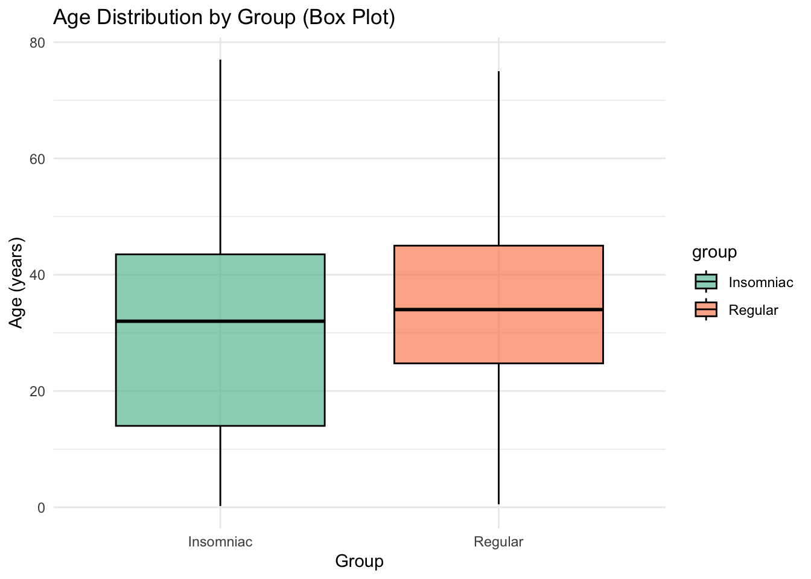
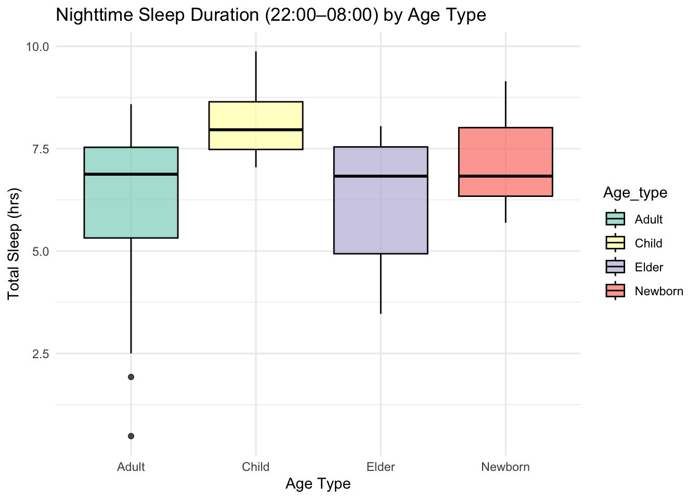
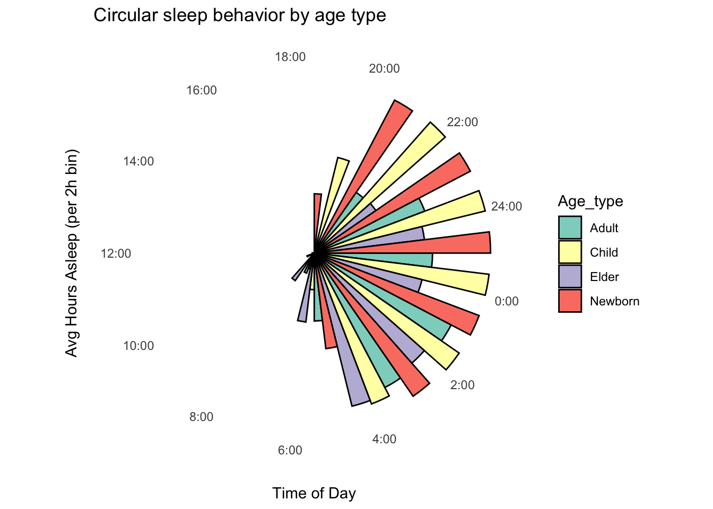
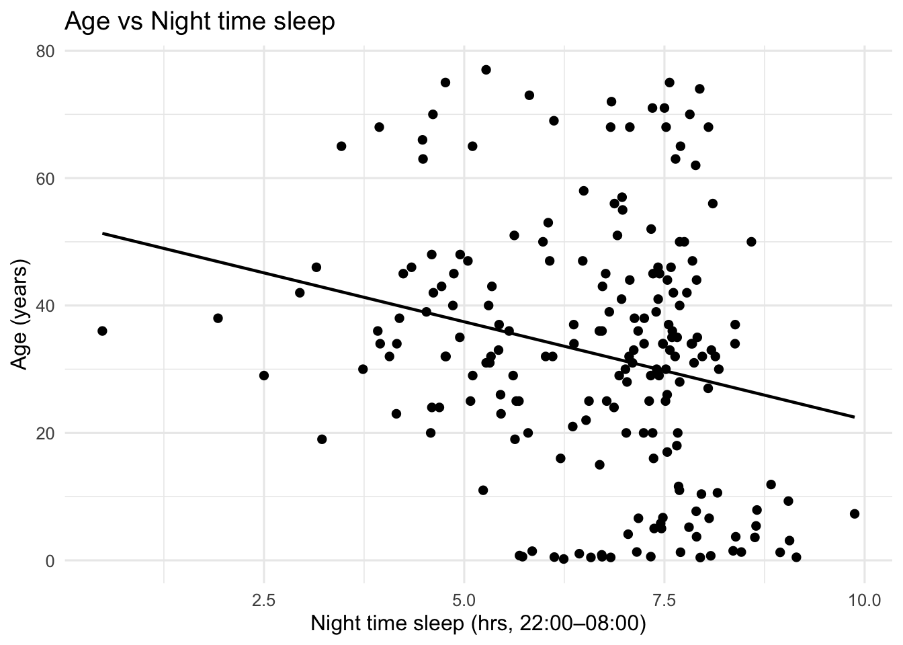

Data Exercise: Analysis of age, gender effects on night time sleep using a synthetic dataset
In this exercise, I chose to work with a dataset that simulates human sleep behavior, focusing on the circadian rhythm, the natural sleep cycle over 24 hours. The dataset includes information from different types of people, organized by age group (like children, adults, elders, and newborns) and gender (female and male), including also sleeping disorder (Regular, or Insomniac).
It records how much people sleep during what was defined by the nigh time hours (from 10 PM to 8 AM), and allows us to explore how age, gender, and whether someone is an insomniac or not affects the number of hours they sleep.
First step was to generate a synthetic dataset.
The code below simulates sleep patterns for different types of people. Each person was randomly assigned a group (“Normal” or “Insomniac”), a gender, and an age, which was then used to classify them into an age type (like “Child”, “Adult”, “Newborn”, or “Elder”).
The 24-hour day was split into 12 time bins, each 2 hours long (e.g., 00–02, 02–04, …, 22–24). For each person, the code calculated how much of their sleep happened in each bin, based on their bedtime and sleep duration.
library(dplyr)
Attaching package: 'dplyr'
The following objects are masked from 'package:stats':
filter, lag
The following objects are masked from 'package:base':
intersect, setdiff, setequal, union
library(tidyr)library(ggplot2)set.seed(1)# Define simulation parametersn <-100groups <-c("Regular", "Insomniac")bins <-seq(0, 24, by =2)labels <-paste0(sprintf("%02d", bins), "-", sprintf("%02d", (bins +2) %%24))## AI Disclosure: this part below was created with the assistance of ChatGPT: # Simulate individualssimulate_sleep <-function(group) {# Randomly assign age type age_type <-sample(c("Newborn", "Child", "Adult", "Elder"), 1, prob =c(0.1, 0.1, 0.7, 0.1)) age <-switch(age_type,"Newborn"=round(runif(1, 0.1, 1.5), 2),"Child"=round(runif(1, 3, 12), 1),"Adult"=round(rnorm(1, 35, 10)),"Elder"=round(rnorm(1, 70, 5)))# Set sleep patterns based on Age_type so it can create a correlation. if (age_type =="Newborn") { start <-rnorm(1, 20, 1) dur <-rnorm(1, 10, 1) } elseif (age_type =="Child") { start <-rnorm(1, 21, 0.5) dur <-rnorm(1, 9, 0.7) } elseif (group =="Regular") { start <-rnorm(1, 22.5, 0.5) dur <-rnorm(1, 7.5, 0.5) } elseif (group =="Insomniac") { start <-rnorm(1, 2.0, 1.5) dur <-rnorm(1, 6, 1.5) } gender <-sample(c("Male", "Female"), 1) start <- start %%24 end <- (start + dur) %%24return(data.frame(start, end, duration = dur, group, age, gender, Age_type = age_type))}# Simulate all individualssleep_df <-do.call(rbind, lapply(groups, function(g) {do.call(rbind, replicate(n, simulate_sleep(g), simplify =FALSE))}))# Allocate sleep into time binsallocate_sleep <-function(start, end, duration) { hour_vec <-numeric(length(bins))for (i inseq_along(bins)) { bin_start <- bins[i] bin_end <- (bin_start +2) %%24 in_bin <-function(t) {if (bin_start < bin_end) return(t >= bin_start & t < bin_end)elsereturn(t >= bin_start | t < bin_end) } bin_time <-seq(0, duration, by =0.25) + start bin_time <- bin_time %%24 hour_vec[i] <-mean(in_bin(bin_time), na.rm =TRUE) * duration }return(hour_vec)}# Bin sleep datasleep_binned <- sleep_df %>%rowwise() %>%mutate(sleep_vec =list(allocate_sleep(start, end, duration))) %>%ungroup()# Wide format for averagingsleep_matrix <- sleep_binned %>%select(group, gender, age, Age_type, sleep_vec) %>%unnest_wider(sleep_vec, names_sep ="_") %>%rename_with(~labels, starts_with("sleep_vec"))# Create summary table: average sleep per 2-hour bin by Age_typesleep_summary <- sleep_matrix %>%group_by(Age_type) %>%summarise(across(all_of(labels), mean), .groups ="drop")
group gender age Age_type
Length:200 Length:200 Min. : 0.21 Length:200
Class :character Class :character 1st Qu.:20.00 Class :character
Mode :character Mode :character Median :33.00 Mode :character
Mean :32.52
3rd Qu.:45.00
Max. :77.00
00-02 02-04 04-06 06-08
Min. :0.0000 Min. :0.000 Min. :0.000 Min. :0.0000
1st Qu.:0.7435 1st Qu.:1.936 1st Qu.:1.486 1st Qu.:0.0000
Median :1.9540 Median :1.959 Median :1.944 Median :0.2466
Mean :1.4451 Mean :1.768 Mean :1.661 Mean :0.6714
3rd Qu.:1.9756 3rd Qu.:1.978 3rd Qu.:1.972 3rd Qu.:1.2347
Max. :1.9996 Max. :2.000 Max. :1.998 Max. :1.9976
08-10 10-12 12-14 14-16 16-18
Min. :0.0000 Min. :0.00000 Min. :0.000000 Min. :0 Min. :0
1st Qu.:0.0000 1st Qu.:0.00000 1st Qu.:0.000000 1st Qu.:0 1st Qu.:0
Median :0.0000 Median :0.00000 Median :0.000000 Median :0 Median :0
Mean :0.2089 Mean :0.04059 Mean :0.002489 Mean :0 Mean :0
3rd Qu.:0.0000 3rd Qu.:0.00000 3rd Qu.:0.000000 3rd Qu.:0 3rd Qu.:0
Max. :1.9976 Max. :1.99092 Max. :0.497730 Max. :0 Max. :0
18-20 20-22 22-00 24-02
Min. :0.00000 Min. :0.0000 Min. :0.000 Min. :0.0000
1st Qu.:0.00000 1st Qu.:0.0000 1st Qu.:0.000 1st Qu.:0.7435
Median :0.00000 Median :0.0000 Median :1.240 Median :1.9540
Mean :0.06315 Mean :0.3257 Mean :1.057 Mean :1.4451
3rd Qu.:0.00000 3rd Qu.:0.2442 3rd Qu.:1.954 3rd Qu.:1.9756
Max. :1.99245 Max. :1.9976 Max. :2.000 Max. :1.9996
Box Plot showing age of people that has insominia
ggplot(sleep_matrix, aes(x = group, y = age, fill = group)) +geom_boxplot(color ="black", alpha =0.7) +scale_fill_brewer(palette ="Set2") +labs(title ="Age Distribution by Group (Box Plot)",x ="Group", y ="Age (years)") +theme_minimal()

Box Plot of sleep time at night (from 22:00 to 08:00) and age_type (Adult, Child, Elder, Newborn):
# Step 1: Define nighttime binsnight_bins <-c("22-00", "00-02", "02-04", "04-06", "06-08")# Step 2: Calculate total nighttime sleep per personsleep_night <- sleep_matrix %>%mutate(Night_sleep =rowSums(select(., all_of(night_bins)), na.rm =TRUE))# Step 3: Plot boxplot of nighttime sleep by Age_typeggplot(sleep_night, aes(x = Age_type, y = Night_sleep, fill = Age_type)) +geom_boxplot(color ="black", alpha =0.7) +scale_fill_brewer(palette ="Set3") +labs(title ="Nighttime Sleep Duration (22:00–08:00) by Age Type",x ="Age Type", y ="Total Sleep (hrs)") +theme_minimal()

Circular plot of sleep time per category:
# Convert to long format for circular plotsleep_long <- sleep_summary %>%pivot_longer(-Age_type, names_to ="time_bin", values_to ="sleep_amount") %>%mutate(bin_start =as.numeric(substr(time_bin, 1, 2)),bin_label =paste0(bin_start, ":00"),bin_angle =2* pi * bin_start /24 )# Plot circular behavior by Age_typeggplot(sleep_long, aes(x =factor(bin_start), y = sleep_amount, fill = Age_type)) +geom_bar(stat ="identity", position ="dodge", width =1, color ="black") +coord_polar(start = pi/2) +scale_x_discrete(labels =function(x) paste0(x, ":00"),breaks =as.character(bins) ) +labs(title ="Circular sleep behavior by age type",x ="Time of Day", y ="Avg Hours Asleep (per 2h bin)") +scale_fill_brewer(palette ="Set3") +theme_minimal() +theme(axis.text.y =element_blank(),panel.grid =element_blank(),axis.title.y =element_text(margin =margin(r =10)))

Check if the variables predict sleep time:
# Model 1: Predict nighttime sleep using Age_typefit1 <-lm(Night_sleep ~ Age_type, data = sleep_night)summary(fit1)
Call:
lm(formula = Night_sleep ~ Age_type, data = sleep_night)
Residuals:
Min 1Q Median 3Q Max
-5.8659 -0.9613 0.3760 1.1427 2.2386
Coefficients:
Estimate Std. Error t value Pr(>|t|)
(Intercept) 6.34773 0.11994 52.925 < 2e-16 ***
Age_typeChild 1.77574 0.32898 5.398 1.94e-07 ***
Age_typeElder -0.07072 0.31634 -0.224 0.823
Age_typeNewborn 0.81264 0.34367 2.365 0.019 *
---
Signif. codes: 0 '***' 0.001 '**' 0.01 '*' 0.05 '.' 0.1 ' ' 1
Residual standard error: 1.404 on 196 degrees of freedom
Multiple R-squared: 0.1456, Adjusted R-squared: 0.1325
F-statistic: 11.13 on 3 and 196 DF, p-value: 8.845e-07
lm(formula = Night_sleep ~ Age_type, data = sleep_night)
The model shows that Age_type significantly predicts night time sleep, with Children and Newborns sleeping significantly more than Adults. Elders do not differ significantly from Adults, and the model explains about 14.6% of the variance in sleep duration (R² = 0.1456).
# Model 2: Predict nighttime sleep using genderfit2 <-lm(Night_sleep ~ gender, data = sleep_night)summary(fit2)
Call:
lm(formula = Night_sleep ~ gender, data = sleep_night)
Residuals:
Min 1Q Median 3Q Max
-6.0760 -1.0078 0.4585 1.0249 3.3177
Coefficients:
Estimate Std. Error t value Pr(>|t|)
(Intercept) 6.6396 0.1434 46.311 <2e-16 ***
genderMale -0.0818 0.2149 -0.381 0.704
---
Signif. codes: 0 '***' 0.001 '**' 0.01 '*' 0.05 '.' 0.1 ' ' 1
Residual standard error: 1.511 on 198 degrees of freedom
Multiple R-squared: 0.000731, Adjusted R-squared: -0.004316
F-statistic: 0.1448 on 1 and 198 DF, p-value: 0.7039
lm(formula = Night_sleep ~ gender, data = sleep_night)
The model shows that gender does not significantly predict night time sleep duration. Difference that is not statistically significant (p = 0.704).
# Model 3: Predict night time sleep using agefit3 <-lm(Night_sleep ~ age, data = sleep_night)summary(fit3)
Call:
lm(formula = Night_sleep ~ age, data = sleep_night)
Residuals:
Min 1Q Median 3Q Max
-6.0604 -1.0861 0.3997 1.0539 2.8303
Coefficients:
Estimate Std. Error t value Pr(>|t|)
(Intercept) 7.173229 0.199109 36.027 < 2e-16 ***
age -0.017527 0.005222 -3.356 0.000947 ***
---
Signif. codes: 0 '***' 0.001 '**' 0.01 '*' 0.05 '.' 0.1 ' ' 1
Residual standard error: 1.47 on 198 degrees of freedom
Multiple R-squared: 0.05383, Adjusted R-squared: 0.04905
F-statistic: 11.26 on 1 and 198 DF, p-value: 0.0009475
lm(formula = Night_sleep ~ age, data = sleep_night)
Call:
lm(formula = Night_sleep ~ age, data = sleep_night)
Coefficients:
(Intercept) age
7.17323 -0.01753
The model indicates that age is a statistically significant predictor of night time sleep, with each additional year of age associated with a decrease of ~0.018 hours (just over 1 minute) in sleep duration (p = 0.00095). However, the effect size is small and the model explains only ~5.4% of the variance in night time sleep (R-squared: 0.05383).
ggplot(sleep_night, aes(x = Night_sleep, y = age)) +geom_point(color ="black", size =1.8) +geom_smooth(method ="lm", color ="black", se =FALSE, linewidth =0.8) +labs(title ="Age vs Night time sleep",x ="Night time sleep (hrs, 22:00–08:00)",y ="Age (years)") +theme_minimal(base_size =12)
`geom_smooth()` using formula = 'y ~ x'

# Model 4: Predict nighttime sleep using group (insomnia status)fit4 <-lm(Night_sleep ~ group, data = sleep_night)summary(fit4)
Call:
lm(formula = Night_sleep ~ group, data = sleep_night)
Residuals:
Min 1Q Median 3Q Max
-5.1988 -0.5934 -0.0280 0.5262 3.4674
Coefficients:
Estimate Std. Error t value Pr(>|t|)
(Intercept) 5.6806 0.1193 47.61 <2e-16 ***
groupRegular 1.8453 0.1687 10.94 <2e-16 ***
---
Signif. codes: 0 '***' 0.001 '**' 0.01 '*' 0.05 '.' 0.1 ' ' 1
Residual standard error: 1.193 on 198 degrees of freedom
Multiple R-squared: 0.3766, Adjusted R-squared: 0.3734
F-statistic: 119.6 on 1 and 198 DF, p-value: < 2.2e-16
lm(formula = Night_sleep ~ group, data = sleep_night)
This model shows that group is a strong and highly significant predictor of sleep duration (p < 2e-16). On average, individuals in the Regular (Normal) group sleep 1.85 hours more than those in the Insomniac group.
ggplot(sleep_night, aes(x = group, y = Night_sleep)) +geom_jitter(width =0.2, height =0, color ="black", size =1.8, alpha =0.6) +stat_summary(fun = mean, geom ="crossbar", width =0.3, color ="black", fatten =0.8) +labs(title ="Night time sleep duration by group",x ="Group", y ="Nighttime Sleep (hrs)") +theme_minimal() +theme(panel.grid =element_blank(),axis.text =element_text(color ="black"),axis.title =element_text(color ="black"),plot.title =element_text(hjust =0.5, face ="bold") )
Warning: The `fatten` argument of `geom_crossbar()` is deprecated as of ggplot2 4.0.0.
ℹ Please use the `middle.linewidth` argument instead.